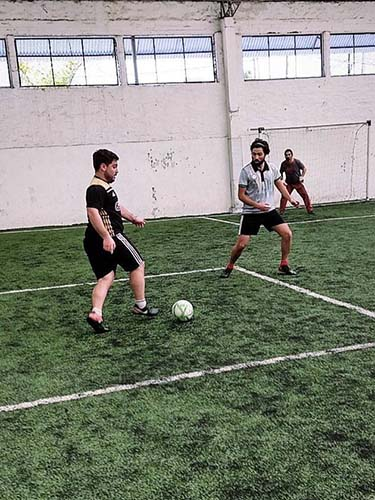

Hola! Soy Facu
Hola, soy Facundo, aunque muchos me conocen como Sanma, apodo que proviene de mi apellido. Tengo 27 años y soy un apasionado del fútbol, así como del diseño y la tecnología. Desde joven, tengo interés en el diseño gráfico y las computadoras, lo que me llevó a trabajar en el campo de la reparación de equipos y en atención al público durante varios años.